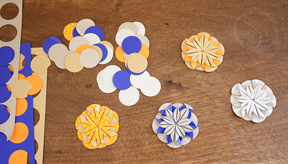
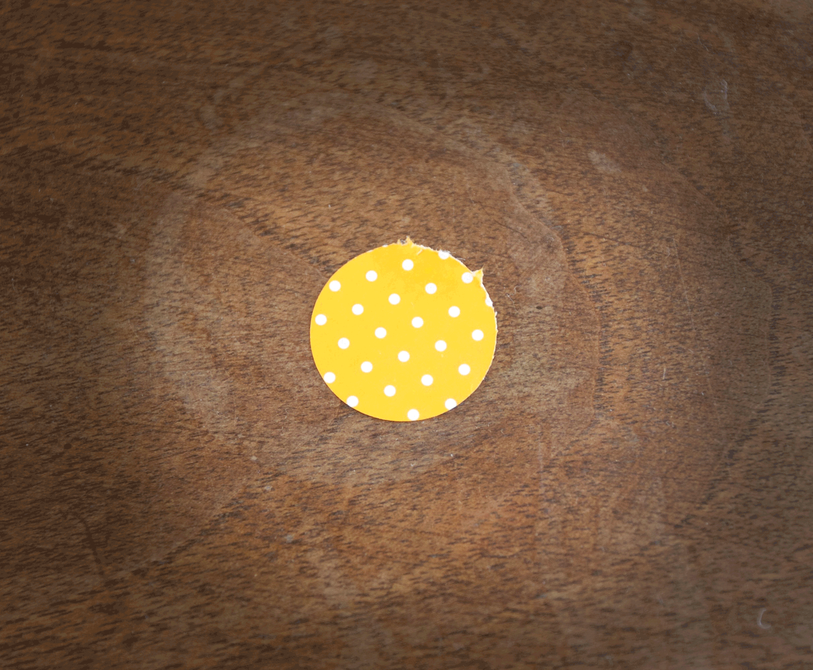
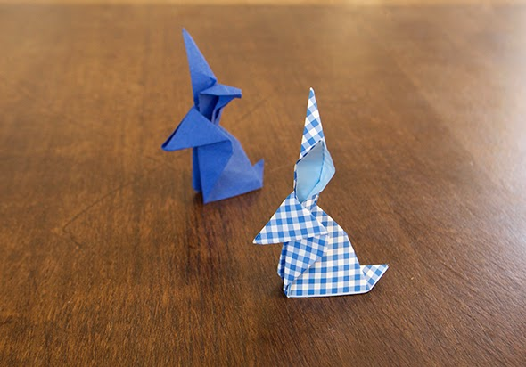

Look how cute are this flowers we´ve done by looking at the instructions of Whimsical world of laura bird thanks to you Laura.



Look how cute are this flowers we´ve done by looking at the instructions of Whimsical world of laura bird thanks to you Laura.



Gift labels of last year made by Bilge (here the instructions ).
Read more →
A simple decoration. Threaded origami boats.
Read more →
A sardine can filled with sea. For this you need colored (blue and white) paper, cardboard. For the sky you can put the box on the…
Read more →
We have found a very good guide to fold origami rabbits.
Read more →
Simple Papyrus, we have found several instructions. For example this .
Read more →
Fishes This fishes are made of reed leave's stripes. Here you find how to fold them.
Read more →